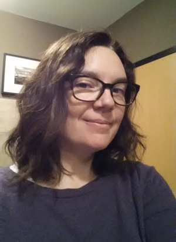

About Me

Liz Townsend holds a Bachelor's Degree in Studio Art from the University of Missouri, Kansas City, with an emphasis in Graphic Design and Photography. While at UMKC, she also studied in the newly formed film department under Daven Gee and Tom Poe, while finishing her degree in the Art Department.
She has a daughter and 2 cats and volunteers with Girl Scouts and the PTA. In her spare time she likes to knit and read.
Some of her prior Web designs include Furology, Kansas City IPMS and Liz Town Design.
She can be reached at liztown@gmail.com, GitHub username: liztownd.